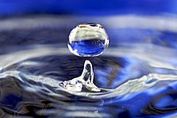

From Wikipedia, the free encyclopedia
Jump to navigationJump to search
For other uses, see Water (disambiguation).
"H2O" redirects here. For other uses, see H₂O (disambiguation).
For a detailed look at the chemistry of water, see Properties of water.
Water (chemical formula H2O) is an inorganic, transparent, tasteless, odorless, and nearly colorless chemical substance, which is the main constituent of Earth's hydrosphere and the fluids of all known living organisms (in which it acts as a solvent[1]). It is vital for all known forms of life, even though it provides no calories or organic nutrients. Its chemical formula H2O, indicates that each of its molecules contains one oxygen and two hydrogen atoms, connected by covalent bonds. The hydrogen atoms are attached to the oxygen atom at an angle of 104.45°. "Water" is the name of the liquid state of H2O at standard conditions for temperature and pressure.
A number of natural states of water exist. It forms precipitation in the form of rain and aerosols in the form of fog. Clouds consist of suspended droplets of water and ice, its solid state. When finely divided, crystalline ice may precipitate in the form of snow. The gaseous state of water is steam or water vapor.
Water covers approximately 70.9% of the Earth's surface, mostly in seas and oceans.[3] Small portions of water occur as groundwater (1.7%), in the glaciers and the ice caps of Antarctica and Greenland (1.7%), and in the air as vapor, clouds (consisting of ice and liquid water suspended in air), and precipitation (0.001%). Water moves continually through the water cycle of evaporation, transpiration (evapotranspiration), condensation, precipitation, and runoff, usually reaching the sea.